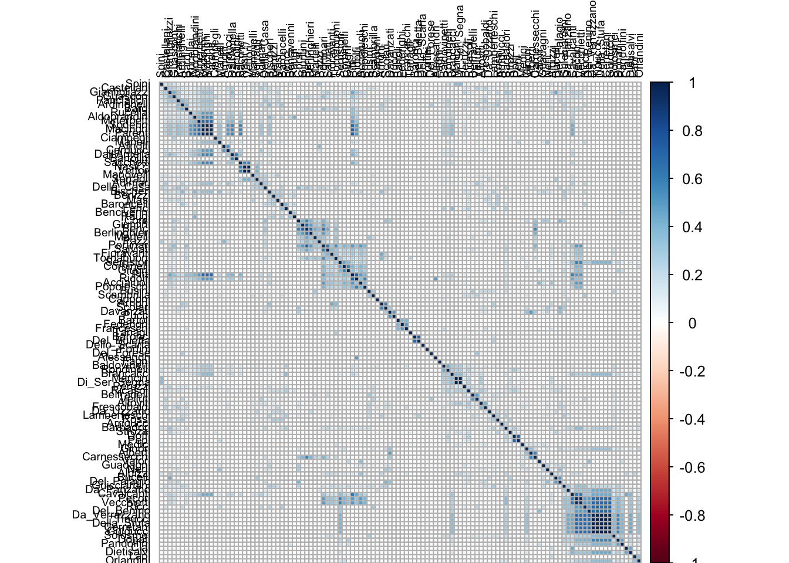
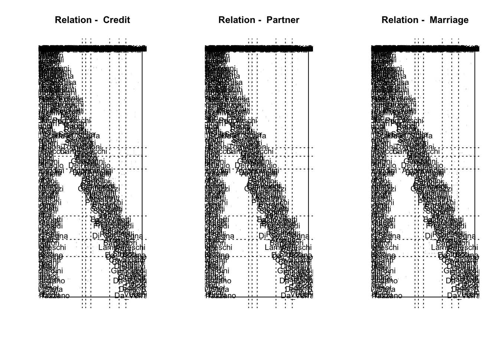

12 Blockmodeling
Blockmodeling is not implemented in igraph. However, I included some code which will allow you to do it easily. You will need to install a package called sna for it to run.
To begin, we load igraph.
# install.packages("sna")
# install.packages("NetCluster")
# install.packages("corrplot")
# install.packages("data.table")
library(igraph)Next we load in all three relationships for the Florentine family data from my website.
marriage_edgelist <- read.csv("http://www.markanthonyhoffman.com/downloads/florentine_marriage_edgelist.csv", stringsAsFactors = FALSE, row.names = 1)
credit_edgelist <- read.csv("http://www.markanthonyhoffman.com/downloads/florentine_credit_edgelist.csv", stringsAsFactors = FALSE, row.names = 1)
partner_edgelist <- read.csv("http://www.markanthonyhoffman.com/downloads/florentine_partner_edgelist.csv", stringsAsFactors = FALSE, row.names = 1)
florentine_attributes <- read.csv("http://www.markanthonyhoffman.com/downloads/florentine_attributes.csv", stringsAsFactors = FALSE)There are three relations: marriage, credit provision and partnership. The first step in blockmodeling is to “stack” the relations, which means to concatenate them into a single, rectangular matrix.
We put them in a list (which is a collection of objects).
florentine = list(Credit = credit_edgelist, Partner = partner_edgelist, Marriage = marriage_edgelist)We them use lapply to apply the same function to each relation in the list. We convert each to a network and then get the adjacency matrix of the networks.
florentine <- lapply(florentine, FUN = function(x) simplify(graph_from_data_frame(d = x, directed = F, vertices = florentine_attributes)))
florentine = lapply(florentine, FUN = function(x) as.data.frame(as.matrix(get.adjacency(x))))Finally, we use do.call(“rbind”, x) to stackk all of the matrices by row.
library(data.table)##
## Attaching package: 'data.table'## The following objects are masked from 'package:reshape2':
##
## dcast, meltflorentine_stacked = do.call("rbind", florentine)Next, we measure structural equivalence using correlation (that is, we measure the similarity between people in terms of the pattern of their relations). The cor function measures correlation.
florentine_cor = cor(florentine_stacked)We can plot the resulting correlation matrix using the corrplot function.
library(corrplot)
corrplot(florentine_cor, order = "hclust", tl.col = "black", tl.cex = .6)
We can convert similarity to dissimilarity by subtracting it from 1. We convert it to a distance matrix with as.dist().
dissimilarity <- 1 - florentine_cor
dissimilarity <- as.dist(dissimilarity)We can use the NetCluster package to cluster the matrix, permute the matrix, and blockmodel.
library(NetCluster)## Loading required package: sna## Loading required package: statnet.common## Loading required package: network## network: Classes for Relational Data
## Version 1.13.0 created on 2015-08-31.
## copyright (c) 2005, Carter T. Butts, University of California-Irvine
## Mark S. Handcock, University of California -- Los Angeles
## David R. Hunter, Penn State University
## Martina Morris, University of Washington
## Skye Bender-deMoll, University of Washington
## For citation information, type citation("network").
## Type help("network-package") to get started.##
## Attaching package: 'network'## The following objects are masked from 'package:igraph':
##
## %c%, %s%, add.edges, add.vertices, delete.edges,
## delete.vertices, get.edge.attribute, get.edges,
## get.vertex.attribute, is.bipartite, is.directed,
## list.edge.attributes, list.vertex.attributes,
## set.edge.attribute, set.vertex.attribute## sna: Tools for Social Network Analysis
## Version 2.4 created on 2016-07-23.
## copyright (c) 2005, Carter T. Butts, University of California-Irvine
## For citation information, type citation("sna").
## Type help(package="sna") to get started.##
## Attaching package: 'sna'## The following objects are masked from 'package:igraph':
##
## betweenness, bonpow, closeness, components, degree,
## dyad.census, evcent, hierarchy, is.connected, neighborhood,
## triad.censusWe use the hclust function to cluster the dissimilarity matrix
result = hclust(dissimilarity)
n = nrow(florentine_cor)To partition the matrix , we have to cut the resulting hierarchical clustering tree.
num_clusters = 7
clusters <- cutree(result, k = num_clusters)
cluster_cor_mat <- clusterCorr (florentine_cor, clusters)With those clustering results, we split the original matrix stack back into its constituent matrices.
florentine_split = split(florentine_stacked, c(rep(1, 116), rep(2, 116), rep(3, 116)))
florentine_split = lapply(florentine_split, as.matrix)And we run the blockmodel function inputting those clustering results.
all_output = blockmodel(florentine_split, clusters, glabels = names(florentine), plabels = colnames(florentine_split[[1]]))Finally, we plot the result!
plot(all_output)